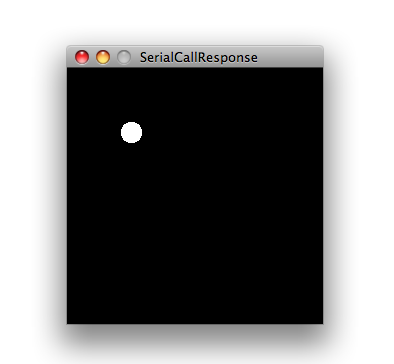

Learning Examples | Foundations | Hacking | Links
Examples > Communication
Serial Call and Response (handshaking)
This example demonstrates multi-byte communication from the Arduino board to the computer using a call-and-response (handshaking) method.
This sketch sends an ASCII A (byte of value 65) on startup and repeats that until it gets a serial response from the computer. Then it sends three sensor values as single bytes, and waits for another response from the computer.
You can use the Arduino serial monitor to view the sent data, or it can be read by Processing (see code below), Flash, PD, Max/MSP (see example below), etc.
Hardware Required
- Arduino Board
- (2) analog sensors (potentiometer, photocell, FSR, etc.)
- (1) momentary switch/button
- (3) 10K ohm resistors
- breadboard
- hook-up wire
Software Required
Circuit
Connect analog sensors to analog input pin 0 and 1 with 10K ohm resistors used as voltage dividers. Connect a pushbutton or switch to digital I/O pin 2 with a 10Kohm resistor as a reference to ground.
click on the image to enlarge
image developed using Fritzing. For more circuit examples, see the Fritzing project page
Schematic
click the image to enlarge
Code
/*
Serial Call and Response
Language: Wiring/Arduino
This program sends an ASCII A (byte of value 65) on startup
and repeats that until it gets some data in.
Then it waits for a byte in the serial port, and
sends three sensor values whenever it gets a byte in.
Thanks to Greg Shakar and Scott Fitzgerald for the improvements
The circuit:
* potentiometers attached to analog inputs 0 and 1
* pushbutton attached to digital I/O 2
Created 26 Sept. 2005
by Tom Igoe
modified 30 Aug 2011
by Tom Igoe and Scott Fitzgerald
This example code is in the public domain.
http://arduino.cc/en/Tutorial/SerialCallResponse
*/
int firstSensor = 0; // first analog sensor
int secondSensor = 0; // second analog sensor
int thirdSensor = 0; // digital sensor
int inByte = 0; // incoming serial byte
void setup()
{
// start serial port at 9600 bps:
Serial.begin(9600);
pinMode(2, INPUT); // digital sensor is on digital pin 2
establishContact(); // send a byte to establish contact until receiver responds
}
void loop()
{
// if we get a valid byte, read analog ins:
if (Serial.available() > 0) {
// get incoming byte:
inByte = Serial.read();
// read first analog input, divide by 4 to make the range 0-255:
firstSensor = analogRead(A0)/4;
// delay 10ms to let the ADC recover:
delay(10);
// read second analog input, divide by 4 to make the range 0-255:
secondSensor = analogRead(1)/4;
// read switch, map it to 0 or 255L
thirdSensor = map(digitalRead(2), 0, 1, 0, 255);
// send sensor values:
Serial.write(firstSensor);
Serial.write(secondSensor);
Serial.write(thirdSensor);
}
}
void establishContact() {
while (Serial.available() <= 0) {
Serial.print('A'); // send a capital A
delay(300);
}
}
/*
Processing sketch to run with this example:
// This example code is in the public domain.
import processing.serial.*;
int bgcolor; // Background color
int fgcolor; // Fill color
Serial myPort; // The serial port
int[] serialInArray = new int[3]; // Where we'll put what we receive
int serialCount = 0; // A count of how many bytes we receive
int xpos, ypos; // Starting position of the ball
boolean firstContact = false; // Whether we've heard from the microcontroller
void setup() {
size(256, 256); // Stage size
noStroke(); // No border on the next thing drawn
// Set the starting position of the ball (middle of the stage)
xpos = width/2;
ypos = height/2;
// Print a list of the serial ports, for debugging purposes:
println(Serial.list());
// I know that the first port in the serial list on my mac
// is always my FTDI adaptor, so I open Serial.list()[0].
// On Windows machines, this generally opens COM1.
// Open whatever port is the one you're using.
String portName = Serial.list()[0];
myPort = new Serial(this, portName, 9600);
}
void draw() {
background(bgcolor);
fill(fgcolor);
// Draw the shape
ellipse(xpos, ypos, 20, 20);
}
void serialEvent(Serial myPort) {
// read a byte from the serial port:
int inByte = myPort.read();
// if this is the first byte received, and it's an A,
// clear the serial buffer and note that you've
// had first contact from the microcontroller.
// Otherwise, add the incoming byte to the array:
if (firstContact == false) {
if (inByte == 'A') {
myPort.clear(); // clear the serial port buffer
firstContact = true; // you've had first contact from the microcontroller
myPort.write('A'); // ask for more
}
}
else {
// Add the latest byte from the serial port to array:
serialInArray[serialCount] = inByte;
serialCount++;
// If we have 3 bytes:
if (serialCount > 2 ) {
xpos = serialInArray[0];
ypos = serialInArray[1];
fgcolor = serialInArray[2];
// print the values (for debugging purposes only):
println(xpos + "\t" + ypos + "\t" + fgcolor);
// Send a capital A to request new sensor readings:
myPort.write('A');
// Reset serialCount:
serialCount = 0;
}
}
}
*/
/*
Max/MSP version 5 patch to run with this example:
----------begin_max5_patcher----------
2569.3oc2as0jiZqD9YO+Jzw09PRc75BIAX671TaUop8gy4gLoNmG1YqsjAY
rxhAGPLW1T4+dZIAd.aCFeiEuYqXFABQqu9qa0Rp0ec2fgyiegmND8KnOgFL
3utav.8sT2XPd4ACWwdwKjkpq1vU7zTV.e3Hyyj7Wj5665Tbq3LYHWJecM2z
tCGh9b9iVyjdKEQAeIg6IMOkRmM1ZDx10UcgRF6LBgmN1Zy6H70se77+38yJ
9DKhijQrU5Ovv6SDrvhmDksRDAedsvRJU8Tw2zUGSfuyl5ZjUckwpa922cm5
mQsDLh3OCx0NXQJODgqENlyhBFNpkvBchFVzfCwZ+vh60DVHm.r3EuZEORtC
t7.WISnOvBCe+uwSWGGkxQnGidL5AdjeJhgl+pjifuNRtjiRMUecbhbDhE4i
R3LnVTcsRQhnwHzCfXhVDmvChyfZ3EGFmLB8x53Tyq7J7Wn3EPS6IR7B4nrT
.n0M+SrvLnYR3xrjHtOZQR7ps+tiMh2+MVx+EzuuTjhz5JDzSy.KAn5Lir5y
eR3AhdjtTL7SBB5SpO8VMIBZjfXsPDC2GpCCojIP1L89EFIC45f9o6e3Ce7i
n6+YUCmJYIxr0iA4.ZvuxUxwyLgo+ajDUCLR8AizsLfnQn7l.8LbW9SfXIjv
qAZdzJ.1P9LIartS5AvqDvArM590I.ayZ1iQyeE8fWrTh9Ug7aA7DVnuFW+c
.q9XP7F+.ghHtGnBzJZLtdhsskshK6PLV85BXmZL3cNRlM9XX1VWPlsLQD.n
C5m.Mwmje9mUpDOE4RDrT99P9BIPMidBdUAP5AV08ggFdSB6YEWPgoqShg2Q
yOeV.OeIa8ZPSNmq32n+C6Efq9m.kETcfimb96Xz+WotkJtYgTrPjvA9Onn2
gE.bNV5WQ2m3mIhh0LmRs0d0lz5UlDiWJGKGs1jXtTixz8lQalvEQBIHVvGM
UqlBXJONOqQZi2BvfjosuWrWPiTOngmXo8oatfoZPiZWCnYeq.ZdK4desvWD
GXYdBQtmLvk1iCu+wgJ12bdfHBLF.QNyioLGTVCKjJGSFPW8vUYQBySUtKWw
70t0f+bdXr2WQoKy.i.+3miNZJqsqA8czvNgRajxR6aneMQbrF.XkqDMzaFo
6wgmV.YDrNjCWaC.4psvwypAfH6Ef9e7DeVDauPDcePjUcAkUVN4I4.SNx.s
gHTMjVJvSJU6ACeq23nGfYlsoKYYT1khiBv6.Ekhq6SVE2zmu3XZiXvO8a0W
WiJ+Tslhn0f+YvFRSv296xxBkeY+fS0muf4wq8kqQULXXPhvONRIFUdW0sK9
f.Gvn6cJK45ZDwVumWVFGGNmk7jHULOjWQS.rYVjXE39TJLRDDWQwCEqVmHL
VratGOhAswxTuj3vvJMk4IOsmmXB95YgubotsdCupL8lRLmJ1YUteiS2opQ2
hjf4.H4T7+kqT81b0Fw+DGSrPZRyro5Bk7Kssom8jxeuZ8OUa3+6ZDhG6LyA
OcR0Wb6oHMnvok4OFcs.VK0+NOHkjCoF5ryrCBot2zPZkwF1cFoJVZy.ZwLS
2YFp0xYsLwvXtXlBOA2..6TK.ukep5FYsgQW2C5R6FzcMChIw5RvXMF+4DV7
TqCBnzSFPsOE.sinq+afR0HPpG03PV+UHm1GFKImLVR9QGKycj1ZnDe6BkMM
vDDVMKYDZMCvrXXtMn2gQuifdGE8N6KhgewExAGpx5ldnJs7b1rRmIpUKNmN
taHqauXRSqETZfYU5IEy7U0fC6cfAlT137vnwrenQCp0QgFtV8Tzv74FdfQ5
HSGSg+y1dj9uaWWF2pXs1ZIKNht7aScTs1L0LKLcuQ878iEowYIdE58h.dPU
6S97ToHZybo+zaNH2phKE99Um4pFtE9qiAJUt.h9bqzdGsb6zV41s+I231H2
S5WxMts3shPQ5OxM4XjaZuQtUCt1d415FTtw8K4d1wf23aP4lzqvaWq1J2N8
K+fsUtc6W768LL3sgbO46gbmeSnCX1tjT1Sb+u.eFHDwuvjxDw7LoIDrxaex
4uaBM9vCsYFAgwyYg4asylVoRauiTscac2aHwkYmzrpcWyJOsi8NkCb995N8
sLYptT1wYxMRpL8udeCYxzAQjolDBf51BDw4FAQToB.LfJ9DS2MCjju8ylcV
rVHwtuAIx3ffP9YyGLoKhY8JpsySabC1u1pWqSS8hM6RrcqTuV2PoyXCo2Y6
xmwbduYKMroMAL1S6aIzXnmesc+PQpT08KtpLBF0xbrXV9pz3t4x9vC5rivT
v9xo2kpTPLrQq8Qsydvwjze1js23fJcSmiNWRveuxj0mXga7OsuEl1jTWtlt
sIGdqqaiut85SJIixVMmmbHEu1tuIkus6jRnfiaiJ+aJcOoAcusILPWyfbGP
2Os+o7anaianaSlRZc2lX8CKmmZWFFZlySH8OR+EBFJFfKGFbZDF5g190LhX
Vzao5wgvnRWZAR4XxF37zsrVnZ10EpnWNn5agnfj3r0HZ8QR2xnGrMAMNA23
.HG+3njuSrHHdZnKBbnCeFgZWr0XSbU4YgEooXqoVWyLZldIym7PAXpsjmvU
oMtWXbJe6iRSCCGQMo4MYlgzX03Anh3dyjj8U.EUh3dLXxz7T51oMXxj9FlT
2IOTSMNwUiI2xwvRn6jfnU.Dbea550AH5SYF6TONl1k3H13lPDbu67XVmYyG
pX1DvA3Aolut5joTx1Isov5yWzJCIgXMoQim9lsyYtvcDhwzHOPNRwu6kUf+
9rvc+4JtLI9sjcrlAUaQ2rXfTmlTwXxMi6.8Yr3z7FjuBlFRuYY7q0a.8lY4
L0F7LzLWKqyZ0sx4KTrloLswU6EeUOHeWx02323L+Buhhn0YRz7rEKTmm4m3
IuBFXnUhPv6I2KNxO8nO8iTy4IKeo.sZ5vOhuYNwnlAXTGna0gztokIwrj.X
WCLfabXDbmECl9qWMO8Lvw16+cNnry9dWIsNpYKuUl.kpzNa2892p6czPsUj
bnsPlbONQhByHUkxwTr5B0d5lRmov51BYcVmBeTbKDIpS2JSUxFwZjIxrtWl
tzTehEUwrbLqlH1rP5UKkmgyDplCpKctFLSZQOYKqpCawfmYRR+7oXYuoz4h
6VsQZmzstbZCWvw9z74XN+h1NlSrdkRTmxnqtTW37zoas9IsxgNoakIRakIb
24QpshDoyDI21.Szt0w8V1g0jNmS6TYBa2VGHGAcpXHByvG1jYaJ0INIrNM2
cj7kmjtozYJsaoJuLCuctHXaFDaqHw5GbPqN0klNltCF3WG65uMy4gP6dYhb
H9T2RmZ07HNRmD4tzv4KbOAuozkHpxCQzvc7LLZiSBR25jffuBy5IWORw5KE
CagO+YWiuFKOA0VOzDY5zRRqtz4Jszqgz5ZjVWqxRqpTWXei6VWyXx0d4nfB
+8c+C81VE7B
-----------end_max5_patcher-----------
*/
Processing Code
Copy the Processing sketch from the code sample above. As you change the value of the analog sensor, you'll get a ball moving onscreen something like this. When you turn the switch off, the ball will disappear:

Max Code
The max patch looks like this. Copy the text from the code sample above.
See Also:
{kind=link}
{kind=link}
{kind=link}